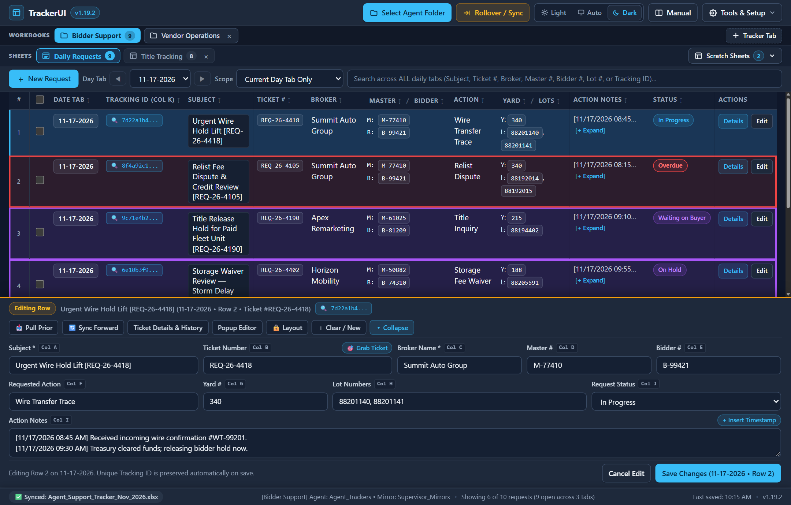
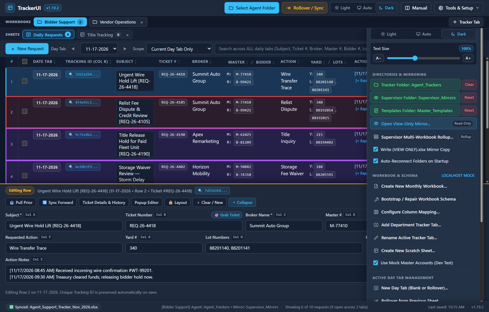
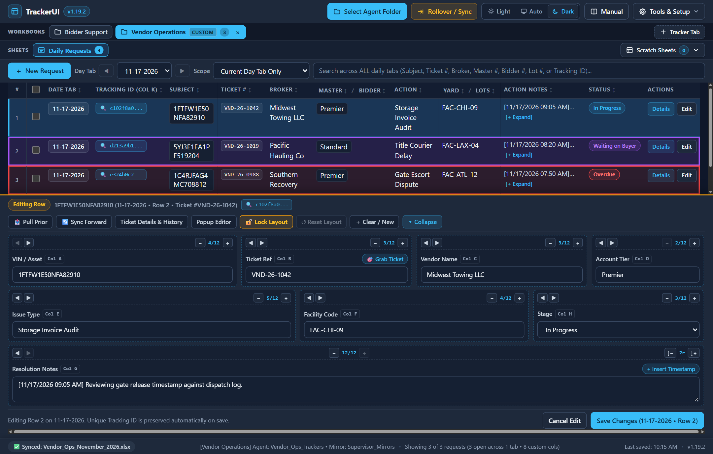
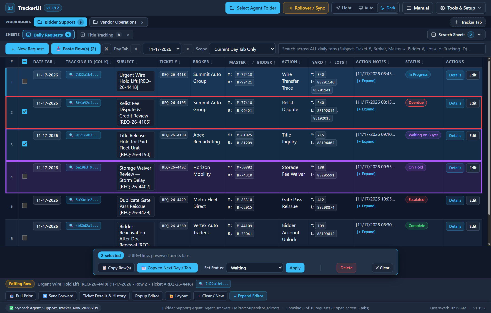
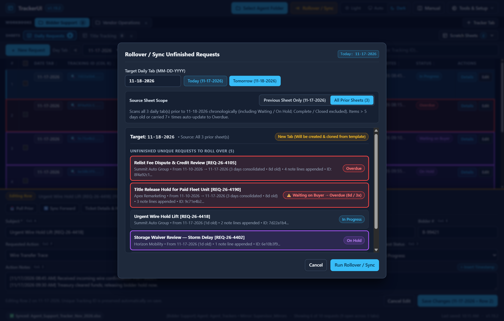
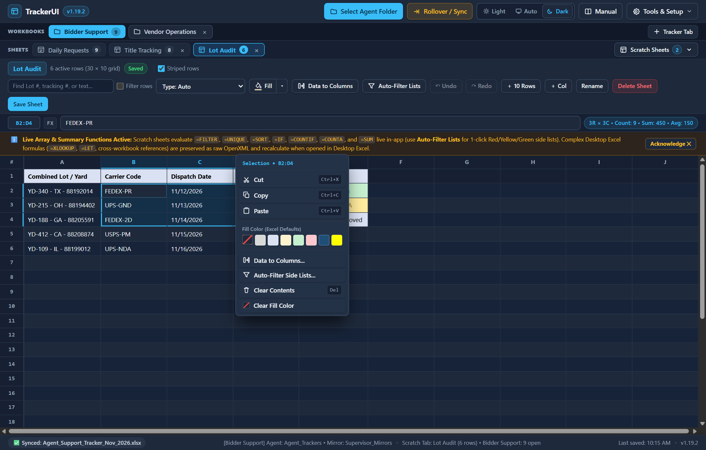
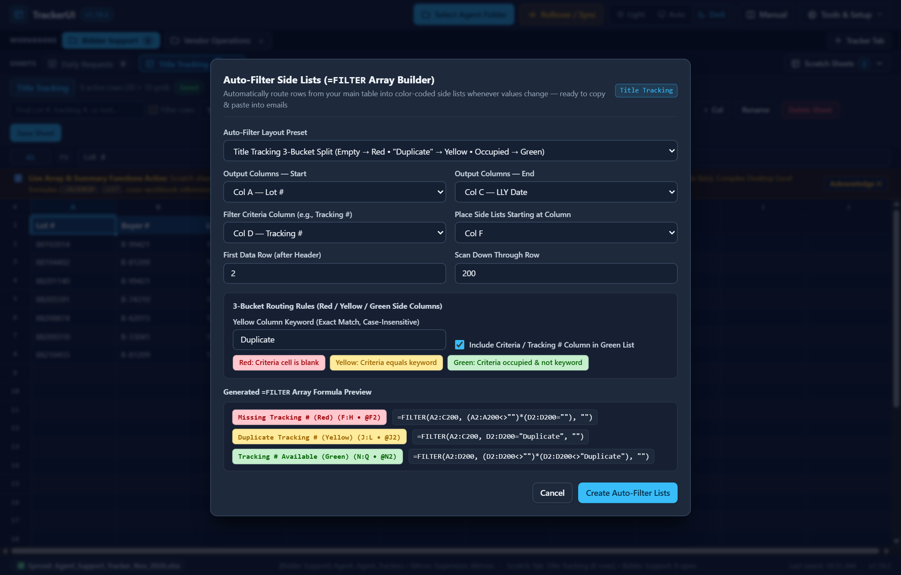
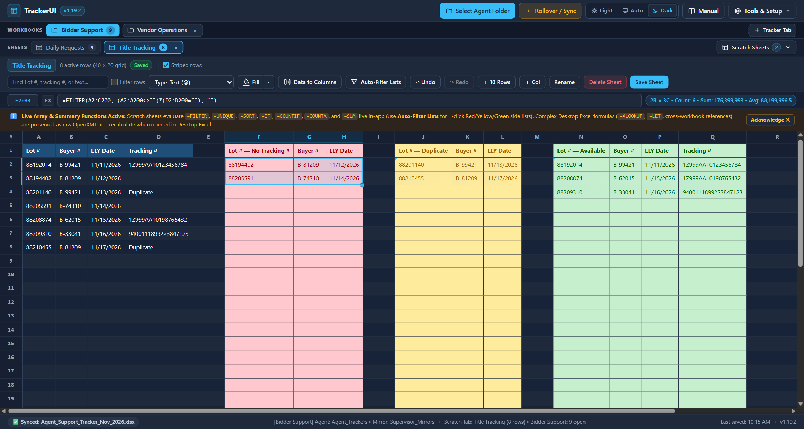
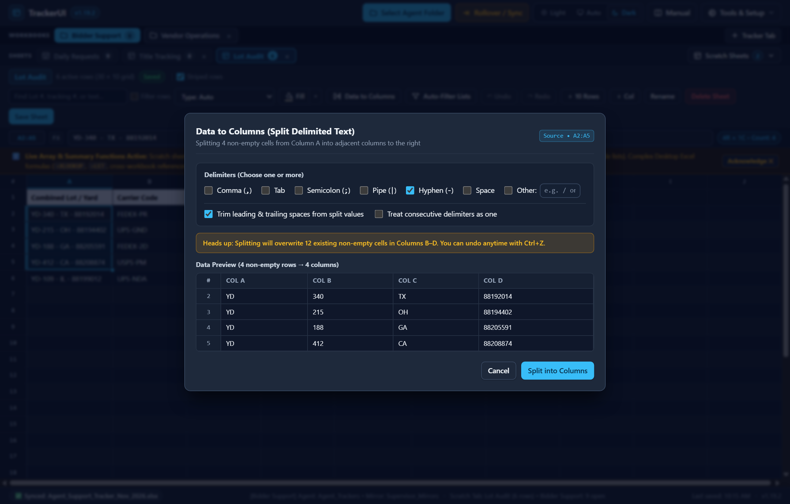

Update Ready: A newer version of TrackerUI was downloaded in the background. Reload now to keep UI and code in sync.
🔒 Active in Another Tab:TrackerUI is already open in another browser tab or window. Editing and background saves are paused here to prevent Excel file race conditions.
Workbook Schema Incomplete: This workbook is blank or missing standard tracker tabs.
Like-Item Filter Active:Showing all daily entries matching
#
Date Tab↕
Subject↕
Ticket #↕
Broker↕
Master↕/Bidder↕
Action↕
Yard↕/Lots↕
Action Notes↕
Status↕
Actions•Accessed↕/ID↕
Click "Select Agent Folder" to connect your tracker directory.
0 selectedUUIDv4 keys preserved across tabs
＋ New RequestSelect a row above to edit, or enter a new request below● Draft Saved
Scratch Sheet0 rows • 0 colsSaved
0 matches
Excel Default Fill Colors
Excel Cell Styles & Light Headers
Standard & Bold Header Colors
A1fx
ℹ️Live Array & Summary Functions Active:
Scratch sheets evaluate =FILTER, =UNIQUE, =SORT, =IF, =COUNTIF, =COUNTA, and =SUM live in-app (use Auto-Filter Lists for 1-click Red/Yellow/Green side lists). Complex Desktop Excel formulas (=XLOOKUP, =LET, cross-workbook references) are preserved as raw OpenXML and recalculate when opened in Desktop Excel.
Selection • A1
Fill Color (Excel Defaults)
Edit Request
Ticket Details & Aggregated Notes
Aggregated Notes & Daily Timeline
Supervisor View-Only Tracker Inspector
Read-Only ArrayBuffer
Date Tab
Subject
Ticket #
Broker
Master / Bidder
Action
Yard / Lots
Action Notes
Status
Rollover / Sync Unfinished Requests
Data to Columns (Split Delimited Text)
Split text in the selected scratch column across adjacent columns to the right
Column A
Auto-Filter Side Lists (=FILTER Array Builder)
Automatically route rows from your main table into color-coded side lists whenever values change — ready to copy & paste into emails
Scratch Sheet
Configure Column Mapping
Inspect Row-1 headers and assign semantic roles for custom department trackers
Complete feature guide, where-to-click instructions, live screenshots & keyboard shortcuts
No manual sections match your search query. Click ✕ in the search box to show all sections.
1. Browser Requirements & Getting Started
Important — Use Google Chrome in Desktop Mode: TrackerUI uses the Chromium File System Access API (window.showDirectoryPicker) to read and write .xlsx workbooks directly in your local or OneDrive folders. Opening the app in another browser or mobile viewport triggers a compatibility reminder that TrackerUI is built specifically for Google Chrome in Desktop Mode.
Open TrackerUI in Desktop Google Chrome.
Click the blue Select Agent Folder button in the top header bar.
Choose the folder containing your monthly .xlsx tracker workbooks (for example, Agent_Trackers\) and grant Chrome read/write permission when prompted.
TrackerUI remembers directory handles per profile tab in IndexedDB so future sessions reconnect automatically (when Auto-Reconnect Folders on Startup is enabled) or with 1 click.
TrackerUI separates top-level Workbooks from in-workbook Sheets so the hierarchy stays clear while maximizing vertical table room:

Main Workspace Overview (v1.19.2) — Workbooks Bar, Sheets Bar, Daily Requests Table & Bottom Editor Dock
Workspace Zone
Location
Where to Click & Purpose
1. Top Header Bar
Top of window
Switch monthly .xlsx files in Workbook, click Select Agent Folder, launch Rollover / Sync, switch Light / Auto / Dark theme, open Manual, or open ⚙️ Tools & Setup ▾.
2. Workbooks Bar
Level 1 Bar
Switch between separate department tracker profiles (e.g., Bidder Support vs. Vendor Operations). Click + Tracker Tab on the right to add another department tracker.
3. Sheets Bar
Level 2 Bar
Switches between views inside the active workbook: Daily Requests and open Scratch Sheets. Click Scratch Sheets ▾ on the right to open or create scratch sheets.
4. Controls & Search
Above main table
Click + New Request, paste copied rows via 📥 Paste Row(s), step dates with ◀ / ▶ around Day Tab, toggle Scope, or type in the Global Search Box.
5. Quick Date Pill Strip
Below Controls (Ultrawide > 1920×1080)
Click any MM-DD-YYYY pill ordered oldest left → newest right. On 1920×1080 and smaller screens, this strip hides automatically (use ◀ / ▶ or the Day Tab menu) and vertical spacing compacts to maximize visible table rows.
6. Bottom Editor Dock
Pinned above Status Bar
Single-click any table row to load it here for instant editing. Click ▾ Collapse (or the dock header bar) to fold or expand the dock.
Automatic File Filtering: Ignores Excel lock files (~$*) and mirror copies (*(VIEW ONLY).xlsx) so you only edit working files.
Dual-Write Supervisor Mirroring: Every save writes your primary .xlsx file first inside an async save mutex, then writes an identical <Workbook Name> (VIEW ONLY).xlsx copy to your Supervisor Folder.
Non-Blocking Mirror Auto-Retry: If a supervisor has the (VIEW ONLY) file open in Excel, your primary save still succeeds immediately! TrackerUI runs a 15-second background auto-retry countdown and surfaces Retry Mirror Sync on the status bar.
Fail-Safe Primary Save Cache (💾 Retry Primary Save): If Desktop Excel locks your working .xlsx file during a save, TrackerUI stages the serialized buffer in IndexedDB so zero edits are lost. Close Excel and click 💾 Retry Primary Save on the bottom-left status bar.
Multi-Tab Session Standby Lock: Opening TrackerUI in a second tab puts the duplicate tab into Read-Only Standby Mode (pausing background auto-saves) to prevent concurrent file race conditions. Click ⚡ Take Over Active Session Here to claim ownership and reload latest data from disk.
4. The Tools & Setup Menu (⚙️ Tools & Setup ▾)
Click ⚙️ Tools & Setup ▾ in the top-right header to configure appearance, folders, schemas, and daily tabs:

Tools & Setup Menu — Appearance, Directories & Live Paths, Workbook Schema & Day Tab Actions
Appearance & Display: Toggle Light / Auto / Dark mode and scale application text size between 85% and 125% using A−, the slider, or A+.
Directories & Mirroring: Configure your Tracker Workbooks Folder, Supervisor Folder, and Templates Folder, open the View-Only Mirror Inspector, launch Supervisor Multi-Workbook Rollup, or toggle mirror writes / startup auto-reconnect.
Workbook & Schema: Create a new monthly .xlsx workbook, non-destructively repair schemas, open Configure Column Mapping, add/rename Department Tracker Tabs, or create a new Scratch Sheet (with 1-click Title Tracking starter layout).
Active Day Tab Management: Create a new MM-DD-YYYY tab (blank or rolled over), roll over strictly from the previous sheet, or rename/delete the current daily tab (reference sheets remain protected and date tabs stay sorted chronologically left-to-right).
Row Management, Config & Cache: Toggle Batch Delete Mode, export/import portable .json workspace configurations, open this User Manual, or refresh the PWA cache.
Left-Hand Row Numbers (#): Sequential Excel-style index numbers appear down the left edge (hovering shows the exact Excel sheet & row number).
Urgency Color Highlights:Overdue rows highlight with both a red outline and red background tint, while Waiting, Waiting on Buyer, and On Hold rows highlight with a purple outline and purple background tint.
Integrated Split-Pill Copy Buttons: On Subject, Ticket #, Master #, Bidder #, Yard #, and individual Lot # tokens, click the left text to filter by Like-Item, or hover and click the right copy icon inside the same pill to copy directly to your clipboard.
Create / Edit Requests: Click + New Request (or single-click any row to load into the Bottom Editor Dock; click Edit / Popup Editor for a dialog).
Auto-Fill & Immutable UUIDv4 (Col K): Typing a known Broker Name fills Master # and Bidder # (and typing a Master # reverse-fills Broker). Every row gets an immutable 36-character UUIDv4 in hidden Column K and timestamp support via + Insert Timestamp.
🎯 Grab Ticket (Above Ticket Number input): Extracts bracketed hyphenated ticket IDs such as [REQ-26-4418] from the Subject field, normalizes them to uppercase, and merges them comma-delimited into Ticket Number without duplicates.
📥 Pull Prior (In Bottom Dock & Popup Editor headers): Scans earlier MM-DD-YYYY tabs for the most recent matching request (by UUID, Ticket #, account/lot identity, or Subject) and fills only currently blank fields while comma-merging Ticket Numbers.
🔄 Sync Forward (In Bottom Dock & Ticket Details): Propagates newly added information (Ticket #, Master #, Bidder #, or Lot #) forward onto rolled-over instances on newer daily tabs non-destructively after preview confirmation.
7. Multi-Department Trackers, Custom Schemas & Lockable Form Layout
Work across multiple departments with custom Excel column headers using dedicated workbook tabs and the adjustable 12-column form grid:

Custom Department Tracker (Vendor Operations) with Unlocked 12-Column Form Layout Controls
Department Workbooks: Click + Tracker Tab on the right of the Workbooks bar. Each tab maintains its own folder handles, active workbook, and custom schema; double-click to rename.
12-Column Form Customizer (🔒 Layout → 🔓 Lock Layout): Unlock the form header to reorder field cards visually (◀ / ▶), adjust column spans (− / + from 2/12 to 12/12 or drag borders), and resize Notes textarea height (↕− / ↕+ from 1r to 6r), without altering Excel column positions.
Per-Column Role & Copy Checkboxes: Open ⚙️ Tools & Setup ▾ → Configure Column Mapping... to assign semantic roles and check or uncheck 📋 Copy on each detected Row-1 column chip.
8. Ticket Details & Multi-Day Aggregated Timeline
Click Details in any row's Actions column (or click [+] Expand in Action Notes) to view the complete multi-day history of a request:
Chronological Daily Timeline & Quick Notes: Displays every MM-DD-YYYY tab where the request appeared, lets you click Edit Row to jump to any day, and appends timestamped updates straight to the latest entry via ＋ Add Timestamped Note.
Automatic Global Search & Sub-Column Sorting: Typing in Search automatically searches across allMM-DD-YYYY tabs and restores your Scope when cleared. Click Master vs. Bidder or Yard vs. Lots headers to sort by sub-field.
1-Click Like-Item Filtering: Click any Tracking ID, Ticket #, Broker, Master #, Bidder #, Action, Yard #, Lot #, or Status pill to isolate matching rows across all tabs.
Floating Batch Status & Manual Row Copy/Paste Bar: Check row checkboxes to reveal the bottom Batch Bar—update statuses in bulk or delete rows cleanly.

Manual Row Copy & Paste — Use 📋 Copy Row(s) + 📥 Paste Row(s) or 📅 Copy to Next Day / Tab...
Two-Step Copy & Paste Across Tabs: Check 1+ rows → click 📋 Copy Row(s) (or Ctrl+C) → switch to any target daily tab → click 📥 Paste Row(s) (N) in Controls (or Ctrl+V) while preserving UUIDv4 Tracking IDs.
1-Step Copy to Next Day / Tab: Click 📅 Copy to Next Day / Tab... to push selected rows directly to tomorrow's or any chosen MM-DD-YYYY sheet (creating the tab from template if needed—ideal for custom workbooks without Status columns).
Click Rollover / Sync in the top header bar to carry unfinished requests forward into today's or tomorrow's MM-DD-YYYY tab:

Smart Rollover / Sync Modal — All Prior Sheets Scan, Overdue Aging (Red) & Waiting / On Hold (Purple) Preview Cards
Target Date Presets & Source Scope: Choose Today or Tomorrow (cloned automatically from template if missing) and toggle Previous Sheet Only vs. All Prior Sheets.
Waiting / On Hold Preservation & Smart Overdue Aging: Active items marked Waiting, Waiting on Buyer, or On Hold remain explicitly preserved in purple cards. Any unfinished active request > 5 days old or carried over 7+ times automatically upgrades to Overdue with a red outline card and aging summary.
Idempotent Sync & Superseded Overrides: Consolidates chronological notes without creating duplicate rows on existing tabs and allows optionally reopening items previously completed on later sheets.
11. Workbook Scratch Sheets (Cell Types, Fill Handle, Copy + Enter & Auto-Filter Lists)
Open or create custom worksheets (such as Title Tracking or Lot Audit) from the Scratch Sheets ▾ menu on the right side of the Sheets bar:

Scratch Sheet Editor — Type Selector, Excel Default Fill Swatches, Striped Rows & Right-Click Context Menu
Copy + Enter Paste & Excel HTML Clipboard: Press Ctrl+C on a cell or range, move to a destination cell, and press Enter to paste and clear the marquee (or press Ctrl+V to keep the marquee active for repeated pasting). Both internal and Excel clipboard transfers preserve fill colors, bold headers, borders, and shifted relative formulas, and paste cleanly into Outlook/Gmail.
Cell Data Types (Type:) & Corner Fill Handle Auto-Increment: Drag the blue corner square at the bottom-right of your selection (or double-click it to fill down alongside adjacent columns) to copy or extrapolate series. Dates and Numbers (<= 10 digits) auto-increment (+1 day / +1 or by multi-cell step delta; hold Ctrl to copy only). Use Type: Text (@) to lock tracking numbers or Lot IDs as exact non-incrementing strings.
1-Click Auto-Filter Lists Modal (Red / Yellow / Green Title Tracking): Split source tables (e.g., Lot #, Buyer #, LLY Date, Tracking #) into color-coded Red (Missing Tracking), Yellow ("Duplicate"), and Green (Occupied Tracking) side lists powered by live =FILTER array formulas.
Fill Colors, Striped Rows & Data to Columns: Apply Excel-native swatches via Fill ▾ or the right-click menu, toggle visual-only Striped rows, and split delimited text across columns via Data to Columns.

Auto-Filter Side Lists Modal — Configure Source Range, Criteria Column, "Duplicate" Keyword & Live Formula Preview

Live Scratch Sheet Array Spill — Source Table (A:D) Auto-Filtering into Red, Yellow & Green Side Lists with Corner Fill Handle

Data to Columns Wizard — Split delimited text across adjacent columns with live preview & Ctrl+Z undo
Live In-App Formula Engine & OpenXML Compatibility: Supported functions below recalculate instantly inside TrackerUI as cells change and save as native Excel formulas. Complex Excel-only functions (=XLOOKUP, =LET, cross-workbook references) remain preserved cleanly in OpenXML for Desktop Excel.
Function
Syntax
In-App Behavior
=FILTER
=FILTER(array, include, [if_empty])
Filters rows (or columns) matching boolean criteria and automatically spills matches into adjacent cells while skipping empty source rows. Uses optional if_empty fallback when 0 rows match (else #CALC!).
=UNIQUE
=UNIQUE(array)
Extracts unique rows/values (case-insensitive) and spills deduplicated results.
=SORT
=SORT(array, [sort_index], [sort_order])
Sorts a range or =FILTER output by column sort_index (1-based) and sort_order (1 asc, -1 desc) for Dates, Numbers, and text.
=IF / AND / OR / NOT
=IF(cond, tVal, [fVal])
Conditional logic with array range broadcasting on =IF and =NOT; multi-argument boolean checks on =AND / =OR.
=ISBLANK / ISEMPTY / ISNUMBER / ISTEXT
=ISBLANK(value)
Returns TRUE/FALSE for blank, numeric, or non-empty text cells (supports range array broadcasting).
Web Worker Background Parsing: Scans all mirror or working .xlsx files in a team directory without freezing the UI, deduplicating rolled-over rows by Tracking ID.
Subtype → Parent Category Pipeline & .xlsx Export: Maps granular actions into executive Parent Categories with 1-click category pills and exports a two-sheet summary report via Export Rollup (.xlsx).
Export / Import Workspace Config (.json): Under ⚙️ Tools & Setup ▾, back up or restore department tracker profiles, custom column mappings, per-column 📋 Copy toggles, and 12-column form layouts as a portable .json file.
Instant Cache Refresh: Click the v1.19.6 version badge in the top-left header (or Check for Updates & Clear Cache in Tools & Setup) to verify and reload the latest version.
15. Quick Reference: Where to Click & Keyboard Shortcuts